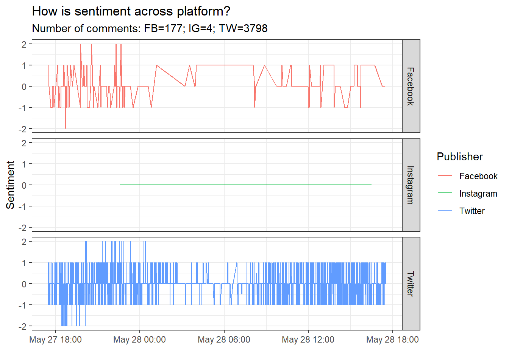

4 Customer Churn Prediction

Figure 4.1: Foto from technologyadvice.com
In this project I decided to use Telco dataset, a dataset from the IBM Watson Analytics community, and apply Random Forest learning method to make prediction whether a customer will churn or not based on features and information about customers who churned within the last month or are still customers.
4.1 Why predicting customer churn?
Consumer churn prediction models are developed to determine which consumers are likely to churn and to encourage an effective segmentation of the customer base to enable companies to approach customers at risk of leaving with a retention strategy. Such a prediction models help small marketing budgets to be wisely utilized to minimize turnover, i.e. to maximize the return on marketing expenditure (ROMI). Customer retention has usually been found to be extremely profitable for companies because it costs five to six times more to acquire new customer than to retain an existing customer. Additionally, long-term customers are more profitable, appear to be less susceptible to aggressive marketing activities, appear to be less costly to service, and can create new referrals by positive word-of - mouth.
Consequently, even a small improvement in customer retention may yield significant returns.
Note: for references take a look at the Reference section
4.2 Data
- The data set includes information about:
- Customers who left within the last month – the column is called Churn.
- Services that each customer has signed up for – phone, multiple lines, internet, online security, online backup, device protection, tech support, and streaming TV and movies.
- Customer account information – how long they’ve been a customer, contract, payment method, paperless billing, monthly charges, and total charges.
- Demographic info about customers – gender, age range, and if they have partners and dependents.
| Variable | Topic |
|---|---|
| Gender | Whether the customer is a male or a female |
| SeniorCitizen | Whether the customer is a senior citizen or not (1, 0) |
| Partner | Whether the customer has a partner or not (Yes, No) |
| Dependents | Whether the customer has dependents or not (Yes, No) |
| Tenure | Number of months the customer has stayed with the company |
| PhoneService | Whether the customer has a phone service or not (Yes, No) |
| MultipleLines | Whether the customer has multiple lines or not (Yes, No, No phone service) |
| InternetService | Customer’s internet service provider (DSL, Fiber optic, No) |
| OnlineSecurity | Whether the customer has online security or not (Yes, No, No internet service) |
| OnlineBackup | Whether the customer has online backup or not (Yes, No, No internet service) |
| DeviceProtection | Whether the customer has device protection or not (Yes, No, No internet service) |
| TechSupport | Whether the customer has tech support or not (Yes, No, No internet service) |
| StreamingTV | Whether the customer has streaming TV or not (Yes, No, No internet service) |
| StreamingMovie | Whether the customer has streaming movies or not (Yes, No, No internet service) |
| Contract | The contract term of the customer (Month-to-month, One year, Two year) |
| PaperlessBilling | Whether the customer has paperless billing or not (Yes, No) |
| PaymentMethod | The customer’s payment method (Electronic check, Mailed check, Bank transfer (automatic), Credit card (automatic)) |
| MonthlyCharges | The amount charged to the customer monthly |
| TotalCharges | The total amount charged to the customer |
| Churn | Whether the customer churned or not (Yes or No) |
| Note: Information collected from https://www.kaggle.com/blastchar/telco-customer-churn |
Here are dimensions of our data set and first 6 rows:
## customerID gender SeniorCitizen Partner Dependents tenure PhoneService
## 1 7590-VHVEG Female 0 Yes No 1 No
## 2 5575-GNVDE Male 0 No No 34 Yes
## 3 3668-QPYBK Male 0 No No 2 Yes
## 4 7795-CFOCW Male 0 No No 45 No
## 5 9237-HQITU Female 0 No No 2 Yes
## 6 9305-CDSKC Female 0 No No 8 Yes
## MultipleLines InternetService OnlineSecurity OnlineBackup DeviceProtection
## 1 No phone service DSL No Yes No
## 2 No DSL Yes No Yes
## 3 No DSL Yes Yes No
## 4 No phone service DSL Yes No Yes
## 5 No Fiber optic No No No
## 6 Yes Fiber optic No No Yes
## TechSupport StreamingTV StreamingMovies Contract PaperlessBilling
## 1 No No No Month-to-month Yes
## 2 No No No One year No
## 3 No No No Month-to-month Yes
## 4 Yes No No One year No
## 5 No No No Month-to-month Yes
## 6 No Yes Yes Month-to-month Yes
## PaymentMethod MonthlyCharges TotalCharges Churn
## 1 Electronic check 29.85 29.85 No
## 2 Mailed check 56.95 1889.50 No
## 3 Mailed check 53.85 108.15 Yes
## 4 Bank transfer (automatic) 42.30 1840.75 No
## 5 Electronic check 70.70 151.65 Yes
## 6 Electronic check 99.65 820.50 Yes4.3 Data Pre-processing
First, we need to remove rows which have at least one NA as a value:
## [1] 7043 21## [1] 7032 2111 are removed from the data set as they held at least one NA as a value. Next, we need to prepare our data set in terms of data types. In order to use Random Forest for churn prediction, we need to make sure that our categorical are represented in numeric manner.
Therefore, all categorical variables will be converted to factors.
# Categorical variables to factors
x[c("Partner","Dependents","PhoneService","gender","MultipleLines","InternetService","OnlineSecurity","OnlineBackup","DeviceProtection","TechSupport","StreamingTV","Contract","StreamingMovies","PaperlessBilling","PaymentMethod","Churn")]<-lapply(x[c("Partner","Dependents","PhoneService","gender","MultipleLines","InternetService","OnlineSecurity","OnlineBackup","DeviceProtection","TechSupport","StreamingTV","Contract","StreamingMovies","PaperlessBilling","PaymentMethod","Churn")], as.factor)
str(x)## 'data.frame': 7032 obs. of 21 variables:
## $ customerID : chr "7590-VHVEG" "5575-GNVDE" "3668-QPYBK" "7795-CFOCW" ...
## $ gender : Factor w/ 2 levels "Female","Male": 1 2 2 2 1 1 2 1 1 2 ...
## $ SeniorCitizen : int 0 0 0 0 0 0 0 0 0 0 ...
## $ Partner : Factor w/ 2 levels "No","Yes": 2 1 1 1 1 1 1 1 2 1 ...
## $ Dependents : Factor w/ 2 levels "No","Yes": 1 1 1 1 1 1 2 1 1 2 ...
## $ tenure : int 1 34 2 45 2 8 22 10 28 62 ...
## $ PhoneService : Factor w/ 2 levels "No","Yes": 1 2 2 1 2 2 2 1 2 2 ...
## $ MultipleLines : Factor w/ 3 levels "No","No phone service",..: 2 1 1 2 1 3 3 2 3 1 ...
## $ InternetService : Factor w/ 3 levels "DSL","Fiber optic",..: 1 1 1 1 2 2 2 1 2 1 ...
## $ OnlineSecurity : Factor w/ 3 levels "No","No internet service",..: 1 3 3 3 1 1 1 3 1 3 ...
## $ OnlineBackup : Factor w/ 3 levels "No","No internet service",..: 3 1 3 1 1 1 3 1 1 3 ...
## $ DeviceProtection: Factor w/ 3 levels "No","No internet service",..: 1 3 1 3 1 3 1 1 3 1 ...
## $ TechSupport : Factor w/ 3 levels "No","No internet service",..: 1 1 1 3 1 1 1 1 3 1 ...
## $ StreamingTV : Factor w/ 3 levels "No","No internet service",..: 1 1 1 1 1 3 3 1 3 1 ...
## $ StreamingMovies : Factor w/ 3 levels "No","No internet service",..: 1 1 1 1 1 3 1 1 3 1 ...
## $ Contract : Factor w/ 3 levels "Month-to-month",..: 1 2 1 2 1 1 1 1 1 2 ...
## $ PaperlessBilling: Factor w/ 2 levels "No","Yes": 2 1 2 1 2 2 2 1 2 1 ...
## $ PaymentMethod : Factor w/ 4 levels "Bank transfer (automatic)",..: 3 4 4 1 3 3 2 4 3 1 ...
## $ MonthlyCharges : num 29.9 57 53.9 42.3 70.7 ...
## $ TotalCharges : num 29.9 1889.5 108.2 1840.8 151.7 ...
## $ Churn : Factor w/ 2 levels "No","Yes": 1 1 2 1 2 2 1 1 2 1 ...We aim to convert our data set into matrix with only 0s and 1s. Thus, all binomial variables can be turned to 0s and 1s in the following way:
# Binomial categorical variables to 0 and 1
x$PhoneService <- as.numeric(x$PhoneService)-1
x$Partner <-as.numeric(x$Partner)-1
x$Dependents <- as.numeric(x$Dependents)-1
x$Churn <- as.numeric(x$Churn)-1
x$gender <- as.numeric(x$gender)-1Now it is left to convert multi-class variables 0s and 1s. Before we do it, let’s inspect our data a bit:
## Categorical variables with more than 2 categories
par(mfrow=c(5,2))
# Multiple lines
ggplot(x, aes(MultipleLines,fill=MultipleLines)) +
geom_bar() +
labs(title="Multiple lines",x="",y="Count")
# Internet services
ggplot(x, aes(InternetService,fill=InternetService)) +
geom_bar() +
labs(title="Internet service",x="",y="Count")
# OnlineSecurity
ggplot(x, aes(OnlineSecurity,fill=OnlineSecurity)) +
geom_bar() +
labs(title="OnlineSecurity",x="",y="Count")
# OnlineBackup
ggplot(x, aes(OnlineBackup,fill=OnlineBackup)) +
geom_bar() +
labs(title="OnlineBackup",x="",y="Count")
# DeviceProtection
ggplot(x, aes(DeviceProtection,fill=DeviceProtection)) +
geom_bar() +
labs(title="DeviceProtection",x="",y="Count")
# TechSupport
ggplot(x, aes(TechSupport,fill=TechSupport)) +
geom_bar() +
labs(title="TechSupport",x="",y="Count")
# StreamingTV
ggplot(x, aes(StreamingTV,fill=StreamingTV)) +
geom_bar() +
labs(title="StreamingTV",x="",y="Count")
# StreamingMovies
ggplot(x, aes(StreamingMovies,fill=StreamingMovies)) +
geom_bar() +
labs(title="StreamingMovies",x="",y="Count")
# Contract
ggplot(x, aes(Contract,fill=Contract)) +
geom_bar() +
labs(title="Contract",x="",y="Count")
# PaymentMethod
ggplot(x, aes(PaymentMethod,fill=PaymentMethod)) +
geom_bar() +
labs(title="PaymentMethod",x="",y="Count")
We can apply one hot encoding to our data set by using R’s base function model.matrix. In the code below, ~.+0 leads to encoding of all categorical variables without producing an intercept.
# One-hot encoding
x.mat<- model.matrix(~MultipleLines+InternetService+OnlineSecurity+OnlineBackup+DeviceProtection+TechSupport+StreamingTV+Contract+StreamingMovies+PaperlessBilling+PaymentMethod+0,data = x)Now is our data set pre-processed:
# Creation of the final data frame with 0s and 1s
final.df<-as.data.frame(x.mat)
final.df<- cbind(x.mat,x$tenure,x$TotalCharges,x$MonthlyCharges,x$PhoneService,x$Partner,x$Dependents,x$gender,x$Churn)
colnames(final.df)[24:31]<-c("tenure","TotalCharges","MonthlyCharges","PhoneService","Partner","Dependents","gender","Churn")4.4 Data partition
Now we need to split our data into test and train data. The proportion is 70:30.
# Creation of training and test data sets
index <- caret::createDataPartition(x$Churn, p = 0.7, list = F)
train <- final.df[index,]
test <- final.df[-index,]
# Partitioning test data
x_test <- as.matrix(test[,-31])
y_test <- as.matrix(test[,31])
# Partitioning train data
x_train <- as.matrix(train[,-31])
y_train <- as.matrix(train[,31])To train our random forest model we use function randomForest(). At this point we will not aim to fine tune our model, so we will define just two parameters,ntree and maxnodes:
ntreedefines the number of trees to build in the forest.maxnodesdefines the maximum number of terminal nodes each tree in the forest can have.
4.5 Random Forest model
# Random Forest
# Training
library(randomForest)
rfModel <- randomForest(x=x_train,
y=factor(y_train),
ntree=500,
maxnodes=24)Since predictions are made based on features our model was trained on, it is possible to observe importance of each feature. The more important a feature, the greater influence it exerts on predictions:
importance_features <- randomForest::importance(rfModel)
importance_features <- as.data.frame(importance_features)
importance_features$features <- row.names(importance_features)
importance_features <- importance_features[order(importance_features$MeanDecreaseGini ,decreasing = TRUE),]
library(plotly)
p<-ggplot(importance_features) +
geom_point(aes(reorder(features,MeanDecreaseGini),MeanDecreaseGini),stat = "identity")+
theme_minimal()+
coord_flip()+
labs(title="Important features",x="Features")
ggplotly(p)As we can see from this output, the tenure feature seems to be the most important factor in making the final prediction. Factors such as InternetServiceFiber optic,TotalCharges and ContractTwo year come subsequently.
4.6 Evaluating Model
In order to evaluate our model we will take a look at accuracy, precision and recall.
# Evaluating Models
prediction_insample <- as.double(predict(rfModel, x_train)) - 1
prediction_outsample <- as.double(predict(rfModel, x_test)) - 1Accuracy is the percentage of correct predictions out of all predictions.
# Accuracy
accu_insample <- mean(y_train == prediction_insample)
accu_outsample <- mean(y_test == prediction_outsample)
print(sprintf('In-Sample Accuracy: %0.4f', accu_insample))## [1] "In-Sample Accuracy: 0.8001"## [1] "Out-Sample Accuracy: 0.7956"We managed to achieve pretty good out-sample accuracy even without thorough fine-tuning our parameters. Precision is the number of true positives divided by the total number of true positives and false positives.
# Precision
prec_insample <- sum(prediction_insample & y_train) / sum(prediction_insample)
prec_outsample <- sum(prediction_outsample & y_test) / sum(prediction_outsample)
print(sprintf('In-Sample Precision: %0.4f', prec_insample))## [1] "In-Sample Precision: 0.7043"## [1] "Out-Sample Precision: 0.6452"Recall is defined as the number of true positives divided by number of true positives plus false negatives.
# Recall
recall_insample <- sum(prediction_insample & y_train) / sum(y_train)
recall_outsample <- sum(prediction_outsample & y_test) / sum(y_test)
print(sprintf('In-Sample Recall: %0.4f', recall_insample))## [1] "In-Sample Recall: 0.4571"## [1] "Out-Sample Recall: 0.4151"Finally, in order to estimate how good our model is in comparison to the random prediction, we will inspect ROC curve and the Area Under the Curve.
library(ROCR)
pred_prob_insample <- as.double(predict(rfModel, x_train, type='prob')[,2])
pred_prob_outsample <- as.double(predict(rfModel, x_test, type='prob')[,2])
pred <- prediction(pred_prob_outsample, y_test)
perf <- performance(pred, measure = "tpr", x.measure = "fpr")
auc <- performance(pred, measure='auc')@y.values[[1]]
{plot(perf,main=sprintf('Random Forest (AUC: %0.2f)', auc),col='darkblue',lwd=2) + grid()
abline(a = 0, b = 1, col='darkgray', lty=4, lwd=2)}
4.7 References
Hwang, Y. H. (2019). Hands-on data science for marketing: Improve your marketing strategies with machine learning using Python and R. Birmingham: Packt Publishing.
W. Verbeke, D. Martens, C. Mues, B. Baesens. Building comprehensible customer churn prediction models with advanced rule induction techniques Expert Syst. Appl., 38 (3) (2011), pp. 2354-2364.
M.R. Colgate, P.J. Danaher. Implementing a customer relationship strategy: the asymmetric impact of poor versus excellent execution J. Acad. Mark. Sci., 28 (3) (2000), pp. 375-387.
J. Ganesh, M.J. Arnold, K.E. Reynolds. Understanding the customer base of service providers: an examination of the differences between switchers and stayers.J. Mark., 64 (3) (2000), pp. 65-87.
D.V. den Poel, B. Larivière. Customer attrition analysis for financial services using proportional hazard models. Eur. J. Oper. Res., 157 (1) (2004), pp. 196-217.